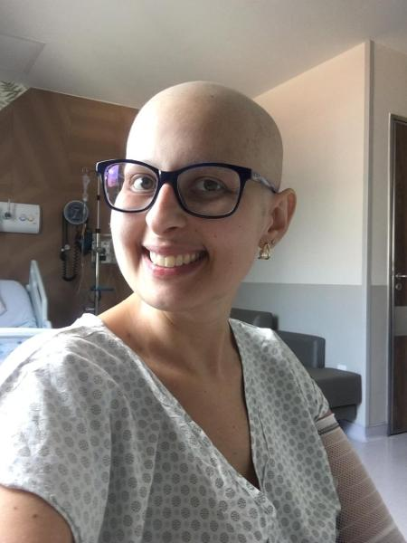

“MES ENFANTS, VOUS REMERCIENT ! VOS POCHES DE SANG M'ONT SAUVÉ LA VIE.”
Hémorragies
Fatima, mère de trois enfants, souffrait d'importantes hémorragies après une opération. Grâce aux dons de sang urgents de donneurs anonymes, Fatima a pu surmonter la crise et retrouver la santé. L'histoire de Fatima a incité de nombreux membres de sa communauté à donner régulièrement leur sang.
Fatima, 38 ans

“MA FEMME ET MA FILLE, VOUS REMERCIENT ! VOS POCHES DE SANG M'ONT SAUVÉ LA VIE.”
Hémorragie
J’ai chuté à vélo assez lourdement, après différents examens, rien de cassé mais une perte de sang importante. Mon hémoglobine baissait de jour en jour. J'ai reçu 5 poches de sang qui ont permis de me sauver la vie. Alors merci à tous les donneurs car grâce à eux je peux voir Rosa, ma fille grandir.
Depuis l'âge de mes 18 ans je donnais mon sang, mes plaquettes et mon plasma. Maintenant que j'en ai reçu je ne peux plus le faire, mais j'encourage les autres à donner.
Benjamin, 33 ans

“JE SERAI ÉTERNELLEMENT RECONNAISSANT ENVERS TOUS NOS DONNEURS”
Cancer
J'ai été diagnostiqué d'un cancer et après plusieurs mois de chimiothérapie, j'ai été admis dans le service de chirurgie pour procéder à l'ablation de la tumeur. Après quelques complications, j'ai dû être transfusé. J'ai ensuite passé 3 semaines dans un centre de rééducation où j'ai rencontré des personnes formidables dont plusieurs aussi ont été transfusées.
Je serai éternellement reconnaissant envers toutes les personnes travaillant dans le médical, mais aussi envers tous nos donneurs. Car sans eux, rien de tout cela ne serait possible.
Ghislain, 23 ans

“Témoignage de quelqu'un.”
Histoire
Un autre témoignage de don de sang.
Nom, âge

“Témoignage d'une autre personne.”
Histoire
Encore un témoignage de don de sang.
Nom, âge